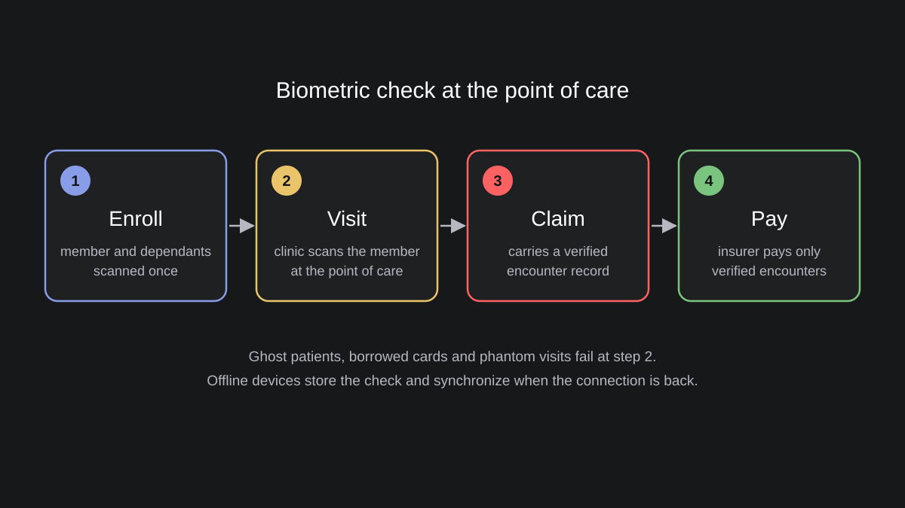

One Person, One Identity: Biometrics in Elections and at the Border
2.78 million invalid voter registrations, 73,180 caught at the border: what Nigeria, the UAE and the EU show about public biometric registers.
Read article →
Iris Identification at National Scale
Why national ID and social registries add iris, where the real cost of a biometric system hides, and how open standards keep a country in control of its own data.
Read article →
Migrating a Biometric Database Without Losing Identities or Getting Locked In
Proprietary templates, format variants and a 2030 deadline: how to change a biometric vendor without re-enrolling millions of people.
Read article →
Biometric Authentication: Modalities, Templates and Lock-in
Face, fingerprint and iris, what a template is, and why its format matters.
Read article →
Patient Identification in Hospitals: Duplicate Records, Impersonation and What Biometrics Changes
The wrong record, a duplicate record or a mixed one: why name search fails at the registration desk and what changes when the patient is the identifier.
Read article →
What Is Iris Scanning? Answers for People Who Have to Deploy It
Safety, hardware, who it works for and what gets stored.
Read article →
Identity Fraud in Life and Funeral Insurance: What South Africa's Numbers Show
16,520 fraud cases in a year: where identity breaks in life and funeral insurance, and where an insurer's own biometric helps.
Read article →
How Iris Recognition Works
Capture, segmentation, unwrapping, encoding and comparison, step by step.
Read article →
Biometric Verification in Health Insurance: Lessons from Ghana and Kenya
Card sharing, ghost patients and phantom visits: what biometric verification changed in Ghana and Kenya, and what it does not solve.
Read article →
Iris Authentication: How Accurate It Is and How to Tune It
Why iris has so few false matches and how to set the threshold for 1:1 and 1:N.
Read article →
Web 3.0 Identity for the Unbanked: Biometric DIDs and Verifiable Credit Histories
Biometric DIDs that survive a lost phone, and credit histories that lenders can verify on a blockchain without seeing private data.
Read article →
Biometric Verification Against Identity Fraud: A Guide for Lenders
Face and iris checks that stop repeat borrowers under new names.
Read article →
Biometric Credit Bureau: Credit History for People Without Documents
How lenders verify borrowers and their repayment history when documents are not enough, with evidence from Malawi and Nigeria.
Read article →
Biometrics in the Humanitarian Sector
Benefits, risks and data protection rules for biometric registration of refugees and aid recipients.
Read article →News and devices

Iriscan Becomes the Official Reseller of CardLogix
BIOSID tablets and Vista iris cameras for enrollment projects in Eastern Europe.
Read article →
Vista FA2 Single Iris & Face Camera
A compact multimodal camera with an iris scanner and a face camera.
Read article →The Manifest Highlights Iriscan
Named among the 15 most-reviewed cybersecurity companies in Ukraine in 2021.
Read article →